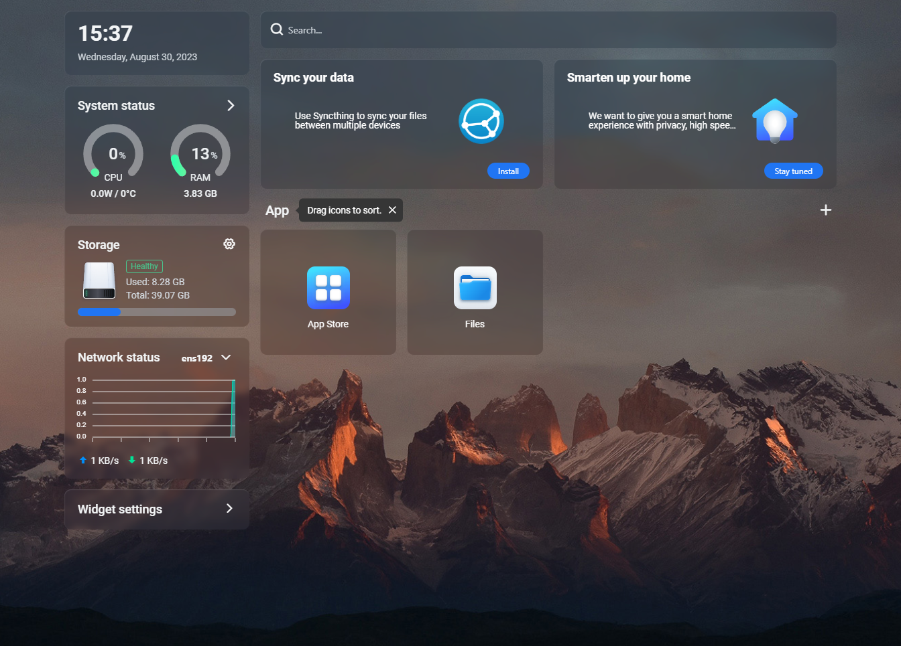
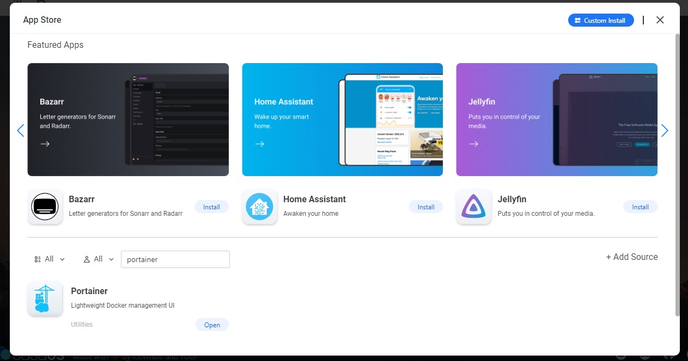
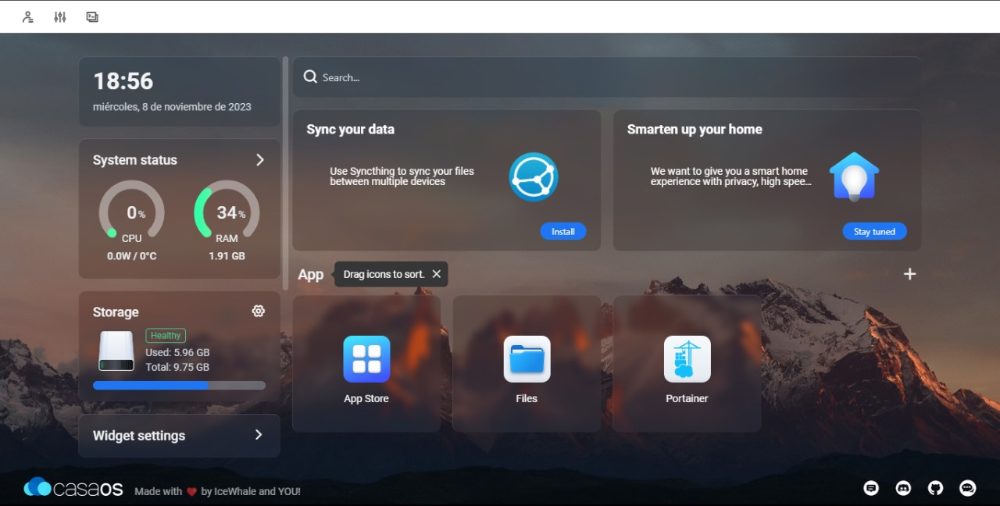
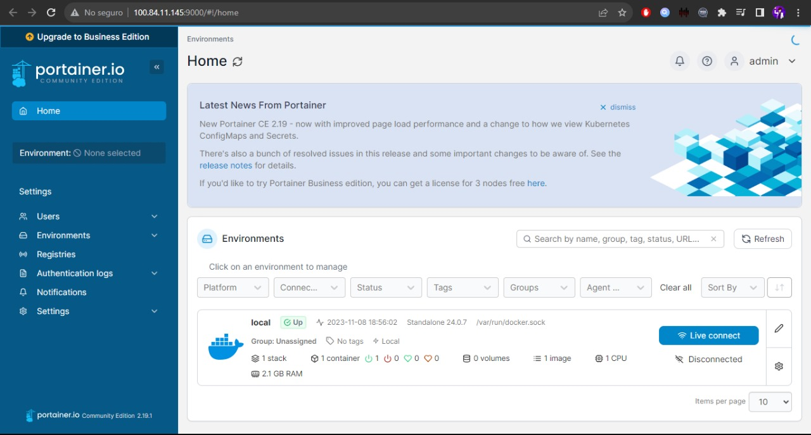

El software de gestión de contenedores más versátil
Proporciona una interfaz gráfica fácil de usar, accesible a través de un navegador web
Se ejecuta como un contenedor Docker independiente, lo que significa que puede implementarse fácilmente en cualquier entorno con Docker instalado
Permite desplegar, detener, reiniciar y eliminar contenedores de manera sencilla a través de la interfaz web
Facilita la administración de imágenes Docker y volúmenes, permitiendo la creación y eliminación de estos recursos
Proporciona información detallada sobre el rendimiento de los contenedores, incluyendo estadísticas en tiempo real y registros
Ofrece funciones de seguridad, como la gestión de usuarios y roles, para controlar el acceso a las funciones administrativas
Es compatible con entornos Docker locales, en la nube o incluso distribuidos
Ofrece una interfaz gráfica intuitiva para gestionar contenedores Docker. Facilitando la administración visual de entornos de contenedores
Es utilizado como una alternativa a Docker Desktop, brindando una opción más accesible y visual
Se utiliza para monitorear y administrar entornos Docker de manera eficiente. Proporciona información detallada sobre el rendimiento de los contenedores, facilitando la detección y resolución de problemas
En el contexto de Raspberry Pi, Portainer se implementa para gestionar contenedores en estos dispositivos. Permite administrar aplicaciones Docker de manera fácil y visual en entornos de baja potencia como Raspberry Pi
Se ha utilizado en casos reales por grandes empresas como parte de sus estrategias de contenerización.
Accede a la interfaz de CasaOS a través de su dirección IP en tu navegador. Luego ingresa a la App Store.
Busca "Portainer" en la lista de complementos disponibles e instalalo
Existe también la posibilidad de instalarlo manualmente mediante comandos
# docker volume create portainer data
# docker run -d -p 9000:9000 -v /var/run/docker.sock:/var/run/docker.sock -v portainer_data:/data portainer/portainer:last
Luego de esto, así se ve el Inicio de CasaOS una vez instalado
Finalmente ingresamos a Portainer, creamos un usuario y una contraseña
El software de gestión de contenedores más versátil